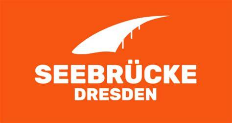

Am 12.06.2026 tritt GEAS europaweit in Kraft. Es ist der Tag, an dem die Friedensnobelpreisträgerin EU die Menschenrechte entsorgt.
Unter dem Motto Sichtbar solidarisch – gemeinsam gegen Abschottung werden wir gemeinsam mit vielen anderen an dem Tag von 16:00 bis 18:00 Uhr mit einer Veranstaltung auf dem Neumarkt präsent sein. Wir wollen deutlich zeigen, dass unsere Solidarität und unser Zusammenhalt stabil bleiben.
Es gibt Redebeiträge, Gesprächs- und Beratungsangebote, Platz zum Malen, Basteln und Spielen, Popcorn, Eis, Seifenblasen, Musik von Tini Bot und der Fiatelle Blaskapelle und mehr.
Gespräche und Beratung mit tollen Menschen von der Refugee Law Clinic, der Initiative „Nein zur Bezahlkarte“, der Abschiebehaftkontaktgruppe, dem Sächsischen Flüchtlingsrat.
Werde aktiv: Etiketten gestalten für Handy und Trinkflasche Button selbst gemacht Mit den Omas gegen Rechts spielen Erinnerungsfotos an der Fotostation machen richtig gute Smoothies und Popcorn die Schreibwerkstatt „Frei(t)raum“Abends gibt es in der Unterkirche der Frauenkirche den Film "Kein Land für Niemand" und im Anschluss daran die Möglichkeit, mit einem Seenotretter aus dem Film ins Gespräch zu kommen.
Friedensgebet unter dem Motto "Sichtbar Solidarisch" um 19 Uhr in der Frauenkirche.
Danach zeigen wir den Film "Kein Land für Niemand" in der Unterkirche der Frauenkirche.
Der Film behandelt die Konsequenzen einer restriktiveren europäischen und deutschen Migrations- und Asylpolitik und thematisiert die politische und gesellschaftliche Dynamik zunehmender Abschottung gegenüber Geflüchteten.
Mit dabei ist der Seenotretter Nolte Bauer, der über die Erfahrungen auf dem Schiff erzählen wird.
Der Eintritt ist frei, um Spenden für Mission Lifeline wird gebeten. Einlass 19 Uhr - Beginn 19:30 Uhr.